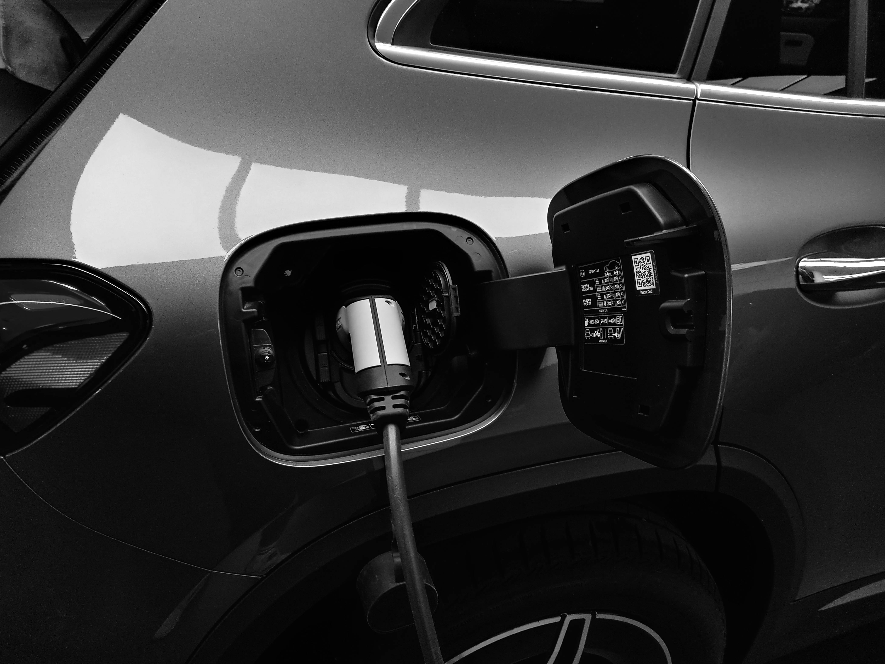

La movilidad eléctrica está a punto de dar un salto cualitativo en España. Un estudio de Recurrent asegura que en 2030, el coste de reemplazar una batería de un coche eléctrico podría bajar hasta los 2.900 euros, mucho menos que cambiar un motor de combustión. Esta revolución en los precios podría eliminar uno de los mayores miedos de los compradores de eléctricos usados.
Actualmente, cambiar la batería de un coche eléctrico supone un desembolso que puede oscilar entre 4.000 y 30.000 euros, dependiendo del modelo y la capacidad. Esta barrera ha sido uno de los principales frenos para el mercado de vehículos eléctricos de segunda mano en España.
¿Qué dice el estudio de Recurrent?
El análisis de Recurrent, una empresa especializada en baterías de vehículos eléctricos, parte de una premisa clara: los compradores de coches eléctricos usados temen tener que reemplazar la batería cuando se degrade. Sin embargo, sus proyecciones indican que esta preocupación podría desaparecer completamente para 2030.
📊 Proyecciones de precios para 2030:
- ✅ Batería de 75 kWh: ~2.900 euros
- ✅ Batería de 100 kWh: 3.800-4.200 euros
- ✅ Coste actual: 4.000-30.000 euros
- ✅ Reducción: hasta 85% más barato
¿Por qué bajarán tanto los precios?
La reducción drástica en los precios de las baterías se debe a varios factores que están convergiendo:
Economías de escala
La producción masiva de baterías está reduciendo los costes de fabricación. Goldman Sachs proyecta que el precio por kWh podría bajar a 64 dólares para 2030, mientras que el Rocky Mountain Institute (RMI) es aún más optimista, estimando entre 32 y 54 dólares por kWh.
Avances en química de baterías
Las nuevas químicas como las baterías LFP (litio-ferrofosfato) sin cobalto y las mejoras en las NCM están reduciendo tanto los costes como la dependencia de materiales caros y problemáticos.
Competencia global
La entrada de nuevos fabricantes, especialmente chinos como BYD y CATL, está intensificando la competencia y presionando los precios a la baja.

Si quieres saber más sobre los diferentes tipos de baterías, te recomiendo nuestra guía completa de baterías LFP vs NCM, donde analizamos cuál es mejor para cada uso.
Impacto en el mercado español
Esta revolución en los precios de las baterías podría tener un impacto transformador en el mercado español de vehículos eléctricos:
- Impulso al mercado de ocasión: Los compradores de eléctricos usados ya no tendrán que preocuparse por el alto coste de reemplazar la batería
- Reducción de la depreciación: Los eléctricos mantendrán mejor su valor residual
- Más accesibilidad: Los vehículos eléctricos serán más asequibles en el mercado de segunda mano
- Aumento de la confianza: Los consumidores tendrán más seguridad al comprar eléctricos
Comparativa: baterías vs motores de combustión
Una de las afirmaciones más impactantes del estudio es que cambiar una batería eléctrica en 2030 será más barato que reemplazar un motor de combustión. Mientras que el coste de un motor diésel o gasolina nuevo puede oscilar entre 3.000 y 8.000 euros, más la mano de obra, las baterías eléctricas podrían estar por debajo de estos precios.
💰 Comparativa de costes de reparación:
- 🔋 Batería eléctrica 75 kWh (2030): ~2.900€
- ⛽ Motor diésel/gasolina: 3.000-8.000€
- 🔋 Batería actual: 4.000-30.000€
- ⚡ Ventaja eléctrica: hasta 5.100€ más barato
Además, las baterías eléctricas no requieren cambios de aceite, filtros o correas, lo que reduce significativamente los costes de mantenimiento a lo largo de la vida del vehículo.
Perspectivas de futuro y desafíos
A pesar del optimismo, hay algunos desafíos que el sector debe abordar:
Red de talleres especializados
España necesitará una red más amplia de talleres capacitados para el reemplazo y reparación de baterías eléctricas. Actualmente, muchos talleres tradicionales no están preparados para este tipo de intervenciones.
Estándares de reciclaje
La gestión del final de vida de las baterías será crucial. El 99,6% de las materias primas de las baterías se pueden recuperar, pero necesitamos infraestructuras adecuadas en España.
Formación técnica
Los mecánicos necesitarán formación específica para trabajar con sistemas de alto voltaje y las nuevas químicas de baterías.

Conclusión: el fin de una barrera psicológica
La caída en los precios de las baterías eléctricas para 2030 podría marcar un punto de inflexión en la movilidad eléctrica en España. El miedo a tener que cambiar una batería cara, que ha sido una de las principales barreras para la compra de eléctricos usados, podría desaparecer completamente.
Esta revolución no solo hará que los vehículos eléctricos sean más accesibles, sino que también mejorará su valor residual y facilitará su integración en el parque automovilístico español. El futuro eléctrico está más cerca de lo que parece.
Si estás considerando comprar un coche eléctrico usado, te invito a leer nuestra guía sobre cuánto dura la batería de un coche eléctrico y cómo cuidarla para maximizar su vida útil.
Preguntas frecuentes sobre el precio de baterías en 2030
FAQ – Precios de baterías eléctricas 2030
🔹 ¿Cuánto costará reemplazar una batería eléctrica en 2030?
Según el estudio de Recurrent, en 2030 reemplazar una batería de 75 kWh costará alrededor de 2.900 euros, mientras que una de 100 kWh estará entre 3.800 y 4.200 euros. Esto es mucho menos que los precios actuales de 4.000-30.000 euros.
🔹 ¿Por qué bajarán tanto los precios de las baterías?
La reducción de precios se debe a avances en la producción masiva, nuevas químicas de baterías, economías de escala y proyecciones de Goldman Sachs que estiman precios de 64 USD/kWh para 2030, pudiendo llegar a 32-54 USD/kWh según el Rocky Mountain Institute.
🔹 ¿Cómo afectará esto al mercado de coches eléctricos usados?
La caída de precios eliminará uno de los principales miedos de los compradores de vehículos eléctricos usados: el alto coste de reemplazar la batería. Esto debería impulsar significativamente el mercado de segunda mano y reducir la depreciación de los eléctricos.
🔹 ¿Qué desafíos hay para implementar estos cambios en España?
Los principales desafíos incluyen desarrollar una red de talleres especializados, implementar estándares de reciclaje adecuados y formar a los mecánicos en sistemas de alto voltaje. También será necesario invertir en infraestructuras de recuperación de materias primas.
Fuentes y referencias
Este artículo se basa en el estudio de Recurrent sobre el futuro de los precios de baterías eléctricas, proyecciones de Goldman Sachs y Rocky Mountain Institute, datos del mercado español de movilidad eléctrica y análisis de tendencias globales en baterías para vehículos eléctricos.
Última actualización: 26 de octubre de 2025